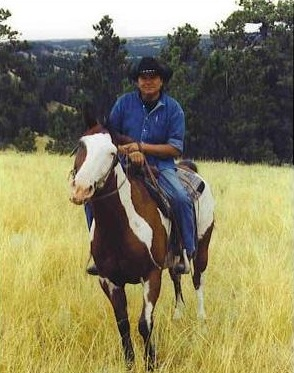
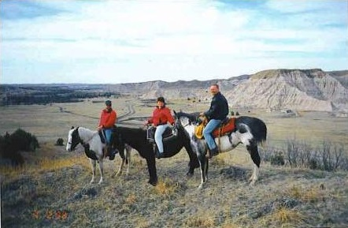

P.O. Box 155 Kyle, South Dakota 57752 (605) 455-2343
South Dakota Tourism Award Winner!
White Thunder Ranch

Trail Rides
See the Beautiful Pine Ridge Reservation on Horseback
Wakinyantuwan Tiwahe is located in the heart of the Pine Ridge
Indian Reservation in South Dakota. Wakinyantuwan Tiwahe is Lakota
owned and operated by Vernell White Thunder who was born and raised
here.
Vernell has been working with horses all his life and he is
able to teach anyone to ride with a short lesson. After your lesson
with Vernell you will be ready to ride on a spectacular Lakota pony
for a ride of a lifetime. People of all different riding experiences
are invited to come and ride. Riders with no experience, novice
riders, as well as the well-experienced rider will all enjoy these
rides that are offered here at Wakinyantuwan Tiwahe.
Please click on the following link for a brief view of a trail ride
at Wakinyantuwan Tiwahe:
Wakinyantuwan Tiwahe
offers three different trail rides:

Badlands Trail Ride
This is a longer trail ride in which you will experience the
breathtaking Badlands on the Pine Ridge Indian Reservation. Besides
the beautiful scenery, you all receive geological information about
the Badlands. Price is $150 per person.
Buffalo Pasture Trail Ride
Explore the 30,000 acre Tribal Buffalo Pasture on horseback with
Vernell as your guide. Herds of buffalo roam this beautiful pasture
land. You will definitely enjoy this ride! Price is $150 per person.
Prairie Trail Ride:
Experience the open prairie with Vernell as your guide. This 1-2
hour trail is a popular ride. Length of ride is dependent on the
rider's experience level. Price is $65 per person. 25%
non-refundable deposit required when making reservations which can
be mailed.
PLAN ON HAVING FUN AND BE SURE TO BRING YOUR CAMERA!!!
whitethunderranch@yahoo.com
Learn
about the history, culture, and geology of the Pine Ridge Indian
Reservation and surrounding regions.